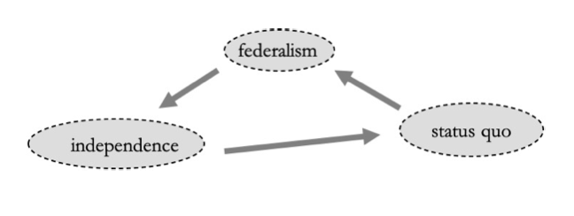

In this lesson, we introduce the fundamental economic concepts of decision making, including preferences and utility functions. Then, we discuss the basics of Game Theory, and how it can help model political situations.
This lesson covers the following topics:
- The basic microeconomic concepts of agents, preferences, and utility functions.
- The basics of game theory, and standard game theory notation.
- A game of preference aggregation, and its implications on voting.
1.1.1: Agents and Preference Relations
When we talk about political science, we are often concerned about how agents make decisions in different scenarios.
- How do politicians make policy decisions? Do they base it off voters? Pay? Lobbying?
- How do voters make decisions? When do they support the incumbents, and when do they support challengers?
- How do different institutions, such as voting systems, legislative layouts, and veto points, effect how everyone within the political sphere makes decisions?
Agents are any individual, organisation, political party, or entity, that can make decisions.
We want to learn about how these agents make decisions. To understand this, we must understand the possible choices that agents can choose.
- What are the possible choices an agent can make? What are the potential outcomes that an agent can achieve?
More specifically, we want to learn about how agents choose from a set of alternative outcomes.
- Given a politician can support anything from a 1% tax rate to a 100% tax rate, which choice will they make? Which tax rate will they choose?
- Given a voter has 3 possible parties to choose from on the ballot, which of the three will the voter choose?
Let us more formally define this concept of alternatives. Let us define X as a set of alternative outcomes an agent can achieve. Alternatives are both mutually exclusive, and exhaustive.
- Mutually exclusive outcomes are outcomes where, if you end up with one outcome, you cannot end up with another outcome. For example, if on a math test, you get a score of 96, you cannot also get a score of 85 on the same exact test. Getting one outcome means you cannot get the other outcomes.
- Exhaustive outcome means that every single possible outcome of a situation, are included in our set of alternatives X. For example, in a math test, assuming no extra test, you can get any outcome between 0 and 100, or more formally: X = \{x \in \mathbb{R}: 0 ≤ x ≤ 100 \}. This set contains all possible outcomes from the math test.
A few mathematical notation notes:
- The sign \in means “in”, or within. For example, if we have some set A = \{a, b, c \}, we can say element a is “in” set A, or a \in A.
- The sign \mathbb{R} means the set of all real numbers (so any number, fraction, or decimal between negative infinity and infinity).
- The sign : means “such that”.
- Typically, we use an upper case letter to represent a set, and a lower case letter to represent an element within a set.
Now that we have a set of alternatives X, let us select any 2 outcomes from within the set of alternatives X. We can compare these two outcomes, which we call a preference relation.
A preference relation indicates the relationships between two elements within the set of alternatives X.
There are three types of preference relations: a Weak Preference relation, a strict preference relation, and indifference.
A Strict Preference is a form of preference relation.
- Let us say that x and y are two outcomes within our set of alternatives: x, y \in X.
- When x \succ y, that means that the agent strictly prefers alternative x to y.
- This means that, if the agent is presented with a choice between x or y, they will always, 100 percent of the time, select x. They always prefer x to y.
Indifference is another form of preference relation.
- Let us say that x and y are two outcomes within our set of alternatives: x, y \in X.
- When x \sim y, that means that the agent is indifferent between x and y.
- That means that, presented with x or y, the agent does not care which is chosen - they feel equally positive/negative about both options.
A Weak Preference is a form of preference relation.
- Let us say that x and y are two outcomes within our set of alternatives: x, y \in X.
- When x \succsim y, that means that the agent weakly prefers alternative x to y.
- That means that an agent either prefers x to y, or is indifferent between x to y. However, they never prefer y to x.
1.1.2: Rational Preferences and Utility Functions
We assume that agents have rational preferences.
Preferences are considered rational, if they are both complete and transitive.
Complete preferences means that for every two elements x, y \in X, either x \succsim y, or y \succsim x, or both. In more intuitive terms, for every two possible alternatives, agents must either prefer one alternative over another, or be indifferent between the two.
- Even more intuitively, if you were to ask an agent about their preferences over any 2 potential outcomes, they would be able to tell you that they either strictly prefer, weakly prefer, or are indifferent between the two outcomes. They would never say “I don’t know”, or “I have no opinion”, or “I have no clue”.
Transitive preferences means that for three elements x, y , z \in X, if x \succsim y, and y \succsim z, then x \succsim z.
- For example, if I prefer apples to oranges, and I prefer oranges to watermelon, then my preferences are only transitive if I also prefer apples to oranges.
- This is much more clearer with numbers. Let us pretend that an agent always prefers larger numbers. The three alternatives are 3, 2, and 1. Transitivity says that if you prefer 3 to 2, and prefer 2 to 1, you should also prefer 3 to 1.
Note that transitivity only applies to individual preferences. We will explore later in this chapter, when transitivity is violated in group preferences.
If our preferences rational, then they can be expressed with a utility function.
A utility function is away to map preference relations over a set of alternatives X, into numerical values. The utility function u : X \rightarrow \mathbb{R} should be such that, for any x, y \in X, u(x) ≥ u(y) if an only if x \succsim y.
More intuitively, this says that our utility function should match our preference relations. If we weakly prefer x to y, then our utility function should mirror this, so u(x) ≥ u(y).
This is the same for all other preference relations: x \succ y \Rightarrow u(x) > u(y), and x \sim y \Rightarrow u(x) = u(y).
Utility functions are powerful, because they allow us to represent binary preferences (comparisons between two alternatives) in a numeric form. This numeric output of the utility function allows us to compare not just the two alternatives, but all alternatives at the same time.
- The utility function is also very useful for mathematical manipulation.
Utility functions are ordinal: they can be used to rank alternatives in terms of preferences. However, utility functions (often) do not tell us how much an agent prefers x to y.
- So in other words, u(x) > u(y) tells us that x \succ y. However, it does not tell us by how much x \succ y. Thus, the value of u(x) - u(y) does not have any meaning.
A preference relation can only be represented as a utility function, if the preferences are rational (i.e. complete and transitive).
If our preferences are not complete, then for some alternatives, we would be unable to assign a numerical value as an output of the utility function.
If our preferences are not transitive, it cannot be expressed in numerical values (as the output of utility functions does). This is because numbers are transitive - if 5 is greater than 4, and 4 is greater than 3, 5 must be greater than 3. If preferences are not transitive, they cannot be represented by numbers who are bounded by transitivity.
1.1.3: Agent Rationality
A few mathematical notation notes:
- The sign \forall means “for all”. For example, \forall y \in X means “for all elements y in set X”.
Political science is about understanding how agents make decisions in political settings. Well, individuals (at least from an economic/science perspective), will typically make decisions that are best for them.
- Without making this assumption, we cannot really model political situations. We need some way to define how most people will make decisions in order to model likely outcomes.
- Note that there is some evidence that people do not always make the “best” decisions for themselves. This is of particular interest for behavioural economists, but we will not worry about this for now.
Given a set of choices/alternative X, which alternative is the “best choice” of the agent? We can define this using the concept of a maximal set.
We can define the “best choice” of an agent from a set of alternatives X, as the outcomes that are included in the maximal set of X, notated M( \succsim, X). The maximal set is defined as:
M(\succsim, X) = \{x \in X: x \succsim y, \ \forall y \in X \}
In more intuitive terms, the maximal set is the set of all alternatives x in X, such that x is weakly preferred over alternative y for every alternative y in X.
Or even more simply, basically, when comparing one outcome to all other outcomes, not a single other outcome is preferred over this outcome. If that is the case, add that outcome to the maximal set.
All elements included in the maximal set M( \succsim, X) are considered to be the “best choices” of an agent, since they are always weakly preferred to all other alternatives y in the set of alternatives X.
We can “identify” the elements that should be included in the maximal set M(\succsim, X) by using the utility function:
M(\succsim, X) = \max\limits_{x \in X}\{u(x)\}
Or in more intuitive terms, the inputs x \in X that make the utility function u: X \rightarrow \mathbb{R} achieve its maximum output value, are the elements of x in the maximal set M(\succsim, X).
This is because by definition, the maximal set contains the alternatives that are weakly preferred to all other alternative outcomes. We know that if we map our preferences into a utility function, that means the maximal set contains the alternatives which have a utility function value greater or equal that all other alternative outcomes. That means that any utility function maximum value meets this condition.
1.1.4: Introduction to Game Theory
A model is a simplified version of reality to help us understand the complex world around us. This is especially useful in the complex world of the social sciences. To simplify reality, models make assumptions.
For example, a driving map is a model of the world. Driving maps simplify the world around us - they depict the earth as flat, and do not contain elevation data, terrain data, and so on. However, these simplifications allow it to perform the task of facilitating navigation very effectively, without overcomplicating things.
Game Theory is the study of mathematical models of conflict and cooperation between rational players. The key property of game theory is that one player’s actions, affect another player’s outcomes/gains/payoffs.
Game Theory is frequently used in Economics to study competitive interaction between producers, consumers, and other economic entities. It can also be applied to the study of politics.
There is common knowledge of the rules of the game/situation. This basically means that every player knows the rules of the game, and that they know that every other player knows the rules of the game.
A player, knowing the rules of the game, will predict what their opponents will do, and will anticipate and react to their opponents decision even before their decisions make their move.
The optimal decision of a player will depend on the beliefs on what they believe the other players will do.
A game is a environment or situation, in which there is strategic interaction between 2 or more players. Each game consists of:
- A set of players.
- For each players, a set of actions and strategies.
- For each player, preferences over the outcomes associated with the actions, such that they have an opinion on every possible outcome of the game. We frequently use utility functions to assign numeric “payoffs” to the possible outcomes of each game.
A player’s preferences over the outcomes of games, in game theory, must be both complete and transitive.
Players will take actions, and they yield some outcomes. The pathway between actions and outcomes is the environment - which includes the rules of the game, the other players’ strategies, and the other players’ beliefs, influence a player’s choice of actions.
Game Theory is subcategorised into a few categories of games. All games in Game Theory are characterised by two factors: the timing of the game, and the availability of information.
The timing of the game determines how players move relative to each other:
- A static game is when all players move “simultaneously”. This does not actually mean they have to move at the exact same moment - it simply means that when one player moves, they cannot yet observe how the other player has moved. Thus, the players must anticipate the other players moves.
- A dynamic game is when players move sequentially, in an order. These are also called extensive form games. This means that players can see how their opponents moved, before they choose their move. For example, Chess is a dynamic game.
The availability of information is another distinction between types of games:
- A game of complete information is a game where everything about the progression of the game is clear: players know where they are in the game, and all the information about the other players in the game.
- A game of incomplete information is where some players have private information about themselves that other players do not have access to, or where players are unclear about what actions a previous player has played.
We will start off this guide by exploring static games of complete information. Then, we will move to dynamic games of complete information. We will finish with more complex games of incomplete information.
1.1.5: Game Theory Notation
Before we start exploring games and concepts within Game Theory, we must understand some notation that is commonly used.
Players in the game are denoted i = 1, 2, \dots N.
- When we say player i, we are referring to any specific player in the game. This allows us to make generalisable statements.
- When we say player 1, or player 2, …, we are referring to that specific player in the game.
- N represents the total number of players in a game.
The actions of a player i, are denoted a_i. They are the choices that a player can make at any point in the game.
- The actions of player 1 are denoted a_1, and the actions of player 2 are denoted a_2, and so on.
The strategies of a player i are denoted s_i. We will discuss the differences between strategies and actions later on in the guide.
- A player’s selected strategy, if applicable, are detonated with an asterisk. For example, player i’s selected strategy is denoted s_i^*.
- All other strategies of player i, that are not the selected strategy s_i^*, are denoted with an “apostrophe” (set complement sign): s_i'.
- Mixed strategies (we will discuss later) are labelled with \sigma instead of s. So, player i’s mixed strategy would be \sigma_i.
The strategy profile s is a vector of all player’s strategies. Mathematically, s = (s_1, s_2, \dots, s_N). A strategy profile defines every single player’s strategies in a game.
- We can split of the strategy profile into 2 different parts. s_i denotes player i’s strategy, while s_{-i} denotes the vector of all other player’s strategies (excluding player i’s strategy).
- Again, mixed strategies will be labelled with a \sigma instead of a s.
Preferences are represented with a utility function u(s_i, s_{-i}). Essentially, this function has inputs of both s_i and s_{-i}, since game theory is about how your own actions, and the actions of others, affect your decision making.
1.1.6: Game - Aggregating Preferences
To conclude this lesson, let us introduce our first example of a game. We will provide many examples of games, and how to solve for their “likely” outcomes in every lesson.
Let us say that we have some society with only 3 people, who are voting on a new constitution for their province. They have three options on the ballot: federalism, independence, or mantain the status quo.
Let us say our 3 voters have the following preferences:
- Voter A: independence \succ federalism \succ status quo.
- Voter B: federalism \succ status quo \succ independence.
- Voter C: status quo \succ independence \succ federalism.
Let us say that the “layout” of the voting is to first vote between two of the options, then, the winner of that vote faces the third option.
Let us consider each possible two-option election, and which option would win in an election (assuming all players vote for the option which they prefer more):
- Independence v. Federalism: Both voter A and C prefer independence to federalism, so 2 votes for independence, 1 vote for federalism, and thus, independence wins.
- Federalism v. Status Quo: Both voter A and B prefer federalism over the status quo, so 2 votes for federalism, 1 vote for the status quo, and thus, federalism wins.
- Status Quo v. Independence: Both voter B and C prefer status quo over independence, so 2 votes for the status quo, 1 vote for independence, and thus, the status quo wins.
Let us plot these potential two-option elections in a figure, where indpendence beats federalism, status quo beats independence, and federalism beats status quo:

One thing that should stand out is that these group preferences are not rational, because they are not transitive: transitivity says that if you prefer independence to federalism, and federalism to status quo, you should prefer indpendence to status quo. But here, status quo wins an election against independence.
This is called Condercet’s Paradox - that often, group preferences are not rational, because they are not transitive.
Another feature of this game is the power of institutions. As political scientists, we care a lot about how institutions effect behaviour. How do voting systems affect turnout? Does democracy reduce the incentives of corruption for politicians? Do certain political structures result in a 2 party or multi-party system?
This game has the institutional feature of agenda power - when one entity has the power to decide how votes or discussions take place.
For example, let us say voter A has agenda power, and can decide what two elections will face off in the first round. Voter A prefers independence the most. They know that independence beats federalism, but status quo beats independence.
Knowing this (because of common knowledge), voter A can be strategic.
- They will decide the first round election will be between federalism and status quo. Knowing the preferences of all other players, voter A knows that federalism will win, eliminating the dangerous status quo that would have beaten voter A’s preferred independence.
- In the second round, independence beats federalism, and Voter A gets his preferred outcome, simply through agenda setting power.
However, this example also brings in another idea - strategic decision making. Remember that voter B does not like independence at all. However, when voter A is setting the agenda, independence is the outcome.
Voter B can “counter” voter A’s agenda power by being strategic. In the first round of federalism and status quo, Voter B prefers federalism more. However, Voter B also knows that if he votes for federalism, that it will certainly lose to independence in the second round, and Voter B hates independence.
Thus, Voter B can be “strategic” and vote against his preferred federalism, and instead, vote for status quo. That means, in the second round, status quo faces independence, and status quo will win based on the preferences. Voter B thus avoides the outcome of independence that they hate.
Thus, Voter B, by intentionally voting for something they prefer less in the first round, is able to actually end up with a better outcome for themselves. This is the idea of strategic decision making - a core concept we will cover throughout this course.
- This is actually quite common - you have probably heard of strategic voters (especially in 2-party systems like the US), who while preferring a smaller 3rd party, may end up voting for either the democrats or republicans, just to make sure the party they dislike does not end up winning the election.
And that concludes our discussion of our first game - voter aggregation. Throughout this course, we will introduce new game theory concepts, and then apply them to games to help illustrate concepts, as well as learn new things about Political Science topics.